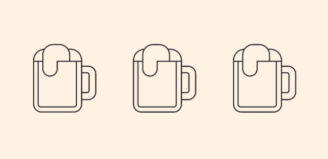
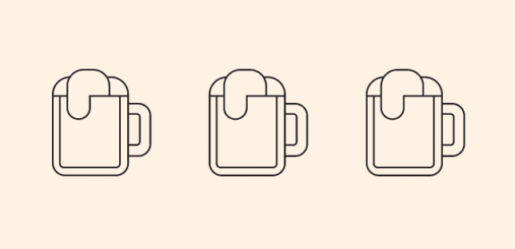

DISEÑO DE INTERFACES
El primer obligatorio de Diseño de Interfaces se dividió en dos partes: en primer lugar una parte de UX, user experience, que se realizó en grupo junto a Micaela Ferrari y Helen Lemos, y en segundo lugar una parte de UI, user interface, que se realizó de manera individual. Ésta es la que se presenta a continuación.
Se diseñó la interfaz gráfica digital de un tótem de autoservicio de cervezas destinado a estar en un bar o restaurante. Este hecho y otros datos obtenidos durante la investigación previa influyeron en algunos aspectos del diseño que son comunes en los trabajos de cada integrante del equipo, como por ejemplo el rotulado o las dimensiones de la pantalla.
Aspectos de caracter subjetivo tales como la paleta tipográfica o cromática son parte de las diferencias en las propuestas de cada una. A continuación se encuentra mi propuesta gráfica.
 
